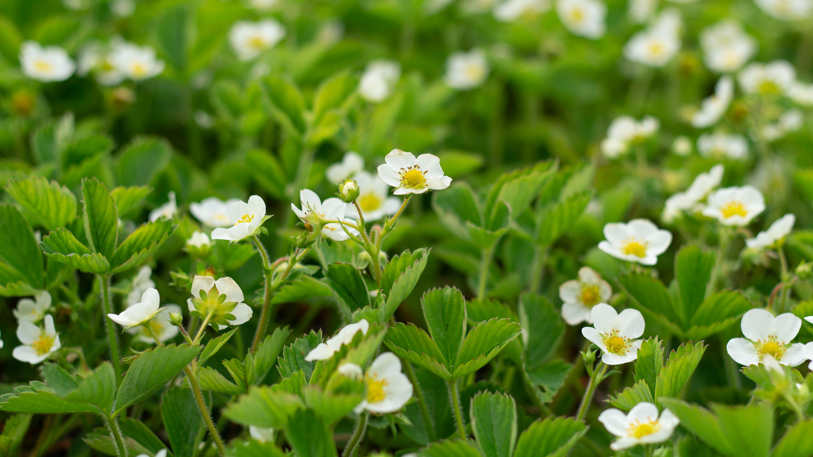

Mansikka
Mansikka
Peuraniemen Taimitarhan valikoimasta löydät eri aikoihin kypsyvät ja eri käyttötarkoituksiin soveltuvat mansikkalajikkeet. Kaikki tuottamamme mansikantaimet ovat paakkutaimia, joiden ensimmäinen maakosketus tapahtuu vasta sinun tilallasi. Mansikan taimet ovat varmennettuja käyttötaimia eli ne ovat vapaita kasvitaudeista ja -tuholaisista.
Keväisin myytävät taimet ovat talvetettuja ja kasvuun hyödettyjä eli niiden kasvuun lähtö on varmistettu jo taimistolla. Syksyisin myytävät taimet on lisätty saman kasvukauden aikana ja niitä alkaa valmistua toimituksiin elokuun alusta alkaen. Syksyisin taimia voi istuttaa myöhäiseen syksyyn asti. Aikaisin heinä-elokuussa istutetut taimet ehtivät kasvukaudella kasvaa isoiksi ja seuraavana vuonna voidaan odottaa jo merkittävää satoa.
Paakkutaimi
Juurrutamme taimet kennoihin turvealustaan ja taimen lähtiessä taimistolta asiakkaalle sen juuripaakku pysyy hyvin kasassa. Hyvin kasteltu turve pidättää kosteutta istutuksen jälkeen taimen kasvun alkutaipaleella ja paakkutaimi joustaakin istutuksen aikatauluissa, kunhan paakku ei pääse kuivumaan. Taimet voikin tilata etukäteen odottelemaan istutusta, kunhan huolehtii niiden kastelusta. Kesäisin olemme myös joustavia taimien lähetyksen osalta ja ennalta varatut taimet voidaan lähettää rahditse lyhyelläkin varoitusajalla.
Kevät- vai syysistutus
Avojuuristen taimien kanssa ainoa vaihtoehto on istuttaa taimet keväisin penkkiin, mutta paakkutaimia istutetaan koko kauden ajan pois lukien jakso juhannuksesta heinäkuun puolen välin tienoille, jolloin taimia ei ole vielä saatavilla. Mansikka tarvitsee kukkia ja marjoja kasvattaakseen kukinta-induktion, joka tapahtuu syksyllä lyhenevissä päivissä ja viilentyvissä lämpötiloissa. Syksyn pituudesta, lämpötiloista ja taimen koosta riippuen määräytyy siis myös seuraavan vuoden satopotentiaali.
Keväällä istutetuissa taimissa on kukka-aiheet muodostuneet jo syksyllä, jolloin niistä voidaan odottaa pientä satoa jo istutuskesänä. Yleistä kuitenkin on, että kukkavanat katkaistaan, jotta kasvi käyttäisi kaiken energiansa kasvuun, jotta seuraavana kasvukautena sato saavuttaisi maksiminsa. Syystaimen etuna onkin, että taimi ei tee kukkia istutuskesänä vaan käyttää kaiken energiansa valmistautuakseen seuraavaan kasvukauteen.
Lajikkeet
Aikaiset
- Honeoye
- Maiju
- Jonsok
- Kaunotar
Pääsato
- Polka
- Lumotar
- Marketta
- Frida
- Korona
Myöhäiset
- Malwina
Jatkuvasatoiset
- Ria